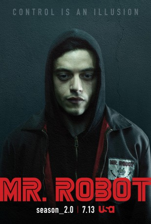
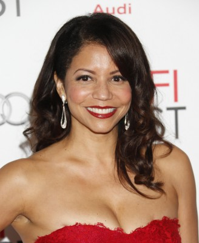
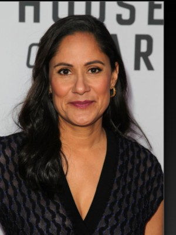
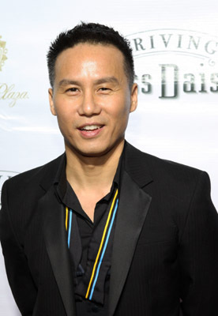

gesehen am 02.05.2018
gesehen am 02.05.2018
 
 IMDB-Wertung: 8.6 / 10
IMDB-Wertung: 8.6 / 10  Metascore: 0
Metascore: 0 
Der sozial beeinträchtigte Elliot baut Verbindungen zu anderen Menschen auf, indem er sie hackt. Dabei dient diese Vorgehensweise nicht einer einfachen Überwachung oder der Beschaffung von Informationen. Er nutzt seine Computerkenntnisse, um die Menschen um sich herum zu beschützen. Dabei steht er zwischen den Fronten der Internetsicherheitsfirma, für die er arbeitet, und einer anarchistischen Untergrundorganisation, die ihn bei sich aufnimmt, um das Amerika der Konzerne zu Fall zu bringen.
Jahr: 2015
Dauer: 49 Minuten
FSK: 16
Land: USA Studio: USA NetworkTonspuren: DD5.1 - ,
Untertitel: Englisch,
Auflösung: 720p (1280x720) Größe: 2211 MB
Genre: Drama, Krimi, TV-Serie
Regisseur: Sam Esmail, Jim McKay, Tricia Brock, Deborah Chow, Nisha Ganatra
Drehbuch: Sam Esmail, Randolph Leon, Adam Penn, Amelia Gray, Courtney Looney
Soundtrack:
Darsteller:
 Rami Malek als Elliot Alderson
Rami Malek als Elliot Alderson- Carly Chaikin als Darlene
- Portia Doubleday als Angela Moss
- Martin Wallström als Tyrell Wellick
- Christian Slater als Mr. Robot
- Stephanie Corneliussen als Joanna Wellick
- Michael Cristofer als Phillip Price
- Grace Gummer als Dominique 'Dom' Dipierro
- Sunita Mani als Trenton
- Jeremy Holm als Mr. Sutherland
- Ron Cephas Jones als Romero
- Michel Gill als Gideon Goddard
- Ben Rappaport als Ollie Parker
 Frankie Shaw als Shayla Nico
Frankie Shaw als Shayla Nico- Azhar Khan als Mobley
-  Gloria Reuben als Krista Gordon
 Michael Drayer als Cisco
Michael Drayer als Cisco- Michael Maize als Lone Star
- Aaron Takahashi als Lloyd Chung
- Vaishnavi Sharma als Elliot's Mother
- Michele Hicks als Sharon Knowles
- Bruce Altman als Terry Colby
- Brian Stokes Mitchell als Scott Knowles
-  Sakina Jaffrey als Antara Nayar
- Elliot Villar als Fernando Vera
- Nadia Gan als Elizabeth
- Deshane Granger als Inconspicuous Man
- Sean Allan Krill als Kevin
- Keil Oakley Zepernick als White Basketball Player
 Rick Gonzalez als Isaac Vera
Rick Gonzalez als Isaac Vera- Randy Harrison als Harry
-  BD Wong als Whiterose
- Don Sparks als Mr. Moss
- Kenneth Lee als Asian Man #2
 Edward James Hyland als Det. Quattlander
Edward James Hyland als Det. Quattlander- Armand Schultz als Michael Hansen
- Nick Mills als Banker
- Olli Haaskivi als Shelter Tech
- Barthelemy Atsin als Basketball Player
- Sahar Bibiyan als Trenton's Mom
- David Chen als Basketball Player
- Anthony Jennings als Vincent
- J. Alphonse Nicholson als Andre
- Christopher Parker als Ray's Goon #2
 Samrat Chakrabarti als Ron
Samrat Chakrabarti als Ron- Susan Pourfar als Penelope
- William Cote als Junkie #4
- Aimee Spring Fortier als Junkie #2
- Jas Anderson als DJ
- Richard Bekins als James Plouffe
Datei: X:\HD-Serien\Mr. Robot\Mr. Robot S01E01.mkv seit 26.11.2015
Festplatte: HD Serien(I-ST)
 Es gibt insgesamt 182 Filme in der Gruppe 'HD-Serien'
Es gibt insgesamt 182 Filme in der Gruppe 'HD-Serien'
")